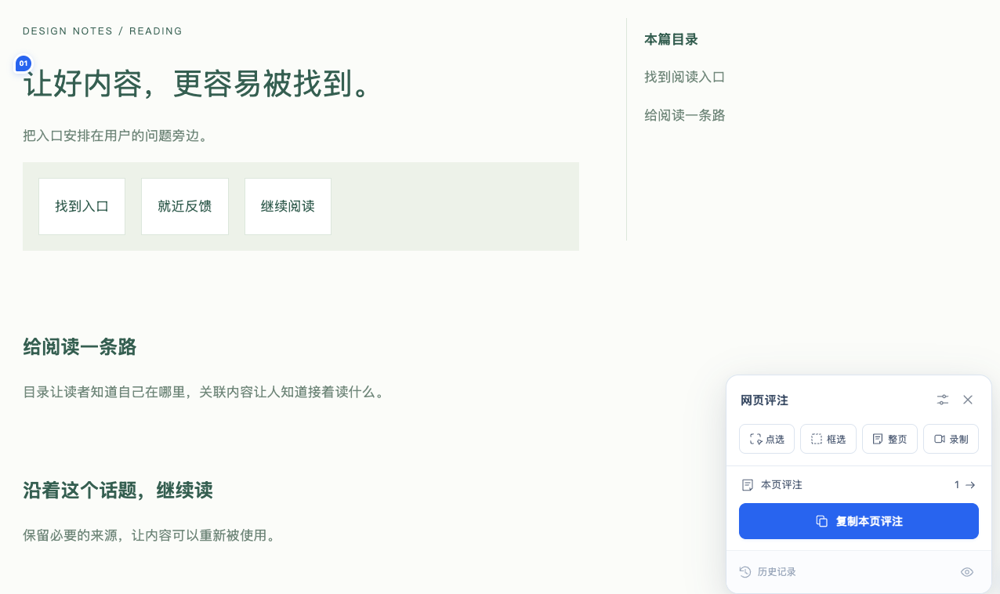
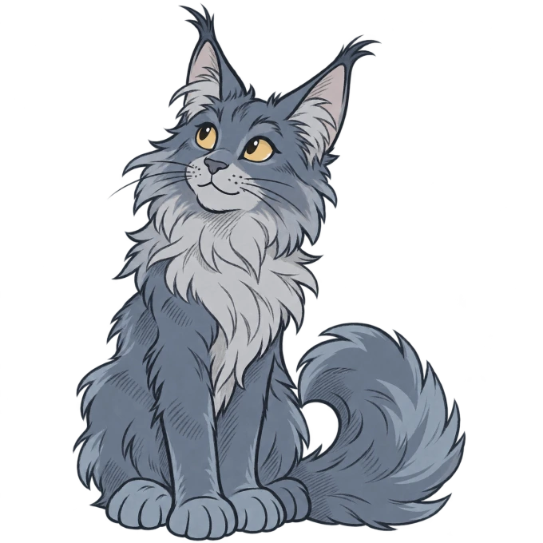
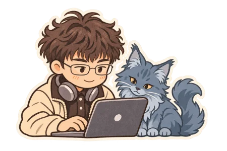

示例网页
把项目里的关键决定和试过的做法记下来。
批注对象 标题「项目笔记」
查看真实操作截图与录制
扩展实测 · 示例网页

定位网页元素
点中标题，它在原网页上留下 01 标记。

嗨，欢迎来逛我的工作台。
Jacky AI 工具与网页交互
看作品示例网页
把项目里的关键决定和试过的做法记下来。
批注对象 标题「项目笔记」

点中标题，它在原网页上留下 01 标记。
同一张封面展开成详情，收起时回到原位。
